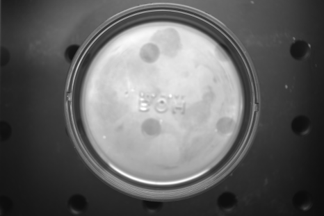
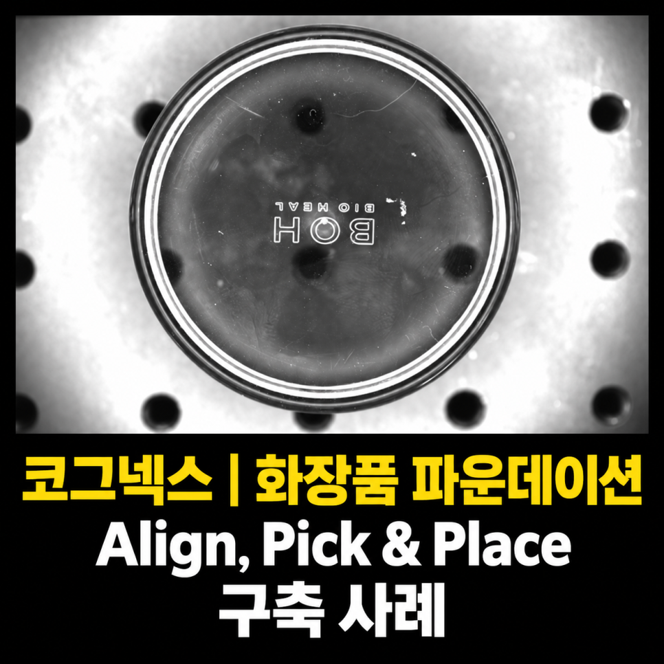
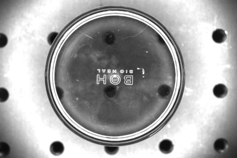

화장품 · 파운데이션 · 얼라인먼트
파운데이션 커버 얼라인·로봇 조립 시스템 사례
머신비전 · 직교로봇
난반사가 있는 파운데이션 커버의 X·Y·θ를 계산하고 직교로봇의 회전·삽입 조립에 연결한 사례입니다. 다양한 모델을 운영할 수 있도록 레시피 관리 화면을 구성했습니다.

Project Summary
프로젝트 핵심 구성
- 산업
- 화장품 · 파운데이션
- 검사·자동화 대상
- 파운데이션 커버 얼라인·로봇 조립
- 주요 기술
- 머신비전 · 직교로봇
- 적용 구분
- 프로젝트 사례
01 · Overview
프로젝트 개요
난반사가 있는 파운데이션 커버의 X·Y·θ를 계산하고 직교로봇의 회전·삽입 조립에 연결한 사례입니다. 다양한 모델을 운영할 수 있도록 레시피 관리 화면을 구성했습니다.
02 · Problem
프로젝트에서 해결해야 했던 문제
고객사는 파운데이션 자동 조립 라인에서 작업자가 직접 커버를 정렬하고 조립하는 공정을 운영하고 있었습니다.
하지만 다음과 같은 문제가 반복적으로 발생하였습니다.
제품 위치가 일정하지 않음
제품 방향이 조금씩 달라짐
작업자의 반복 작업으로 인한 휴먼에러
생산 속도 향상에 한계
다양한 제품 모델 관리의 어려움
특히 제품이 정확한 위치에 조립되지 않으면 외관 품질과 조립 품질에 영향을 줄 수 있어 자동화가 필요한 상황이었습니다.
- 제품 위치·방향 편차
- 다양한 모델과 표면 재질
- 회전·삽입 조립
03 · System
검사·자동화 시스템 구성
난반사가 있는 파운데이션 커버의 X·Y·θ를 계산하고 직교로봇의 회전·삽입 조립에 연결한 사례입니다. 다양한 모델을 운영할 수 있도록 레시피 관리 화면을 구성했습니다.
X·Y·θ 계산
로봇 좌표 전달
회전·삽입 조립

04 · Inspection
프로젝트 배경
화장품 생산라인은 제품 종류가 많고 디자인이 다양하기 때문에 자동화가 쉽지 않은 분야 중 하나입니다.
특히 제품의 위치와 방향이 조금만 달라져도 조립 불량이 발생할 수 있어 높은 정밀도의 머신비전 시스템이 요구됩니다.
이번 프로젝트는 화장품 파운데이션 커버를 머신비전으로 정밀하게 인식한 후 직교로봇이 자동으로 Pick & Place 및 조립을 수행하는 자동화 시스템을 구축한 사례입니다.
다양한 제품 모델과 심한 난반사 환경에서도 안정적인 위치 인식이 가능하도록 광학 설계부터 프로그램 구성까지 최적화하여 성공적으로 프로젝트를 완료하였습니다.
05 · Inspection
고객의 고민
고객사는 파운데이션 자동 조립 라인에서 작업자가 직접 커버를 정렬하고 조립하는 공정을 운영하고 있었습니다.
하지만 다음과 같은 문제가 반복적으로 발생하였습니다.
제품 위치가 일정하지 않음
제품 방향이 조금씩 달라짐
작업자의 반복 작업으로 인한 휴먼에러
생산 속도 향상에 한계
다양한 제품 모델 관리의 어려움
특히 제품이 정확한 위치에 조립되지 않으면 외관 품질과 조립 품질에 영향을 줄 수 있어 자동화가 필요한 상황이었습니다.
06 · Inspection
단순한 Pick & Place가 아니었습니다
일반적인 Pick & Place 시스템은 제품의 위치를 인식한 후 그대로 집어서 원하는 위치에 내려놓는 방식이 대부분입니다.
하지만 이번 프로젝트는 조금 달랐습니다.
직교로봇은 제품을 집은 후 단순히 이동하는 것이 아니라,
조립 위치에 맞춰 회전(Rotation) 하면서 커버를 정확하게 삽입해야 하는 공정이었습니다.
따라서
X 좌표
Y 좌표
θ(회전각)
모두 높은 정밀도로 계산되어야 했으며,
머신비전의 위치 인식 정확도가 전체 생산 품질을 결정하는 핵심 요소였습니다.

07 · Inspection
다양한 제품과 난반사 환경
또 하나의 어려움은 제품 종류였습니다.
파운데이션은 모델마다
크기
형태
색상
표면 재질
이 모두 달랐으며,
광택이 있는 재질 특성상 난반사도 매우 심한 환경이었습니다.
이러한 조건에서는 단순히 카메라 성능만으로는 안정적인 검사가 어렵기 때문에 제품 특성에 맞는 조명 선정이 무엇보다 중요했습니다.
ASPEC은 다양한 광학 테스트를 통해 제품의 형상이 가장 안정적으로 표현될 수 있는 조명과 카메라를 선정하여 높은 위치 인식 정확도를 확보하였습니다.
08 · Inspection
다양한 모델도 쉽게 운영할 수 있도록 레시피 관리
화장품 생산라인은 제품 종류가 자주 변경됩니다.
이번 프로젝트 역시 다양한 모델을 하나의 시스템에서 운영해야 했기 때문에 운영 편의성이 매우 중요한 요소였습니다.
ASPEC은 제품별 레시피를 구성하면서도 작업자가 복잡한 설정을 하지 않아도 몇 번의 클릭만으로 제품 모델을 변경할 수 있도록 프로그램을 설계하였습니다.
현장에서는 생산 품목 변경 시 별도의 기술 지원 없이도 손쉽게 운영할 수 있도록 사용자 중심의 인터페이스를 제공하였습니다.
09 · Inspection
합리적인 비용으로 구축
자동차나 전자 산업과 달리 화장품 업계에서는 투자 대비 효과도 매우 중요한 요소입니다.
이번 프로젝트 역시 고객이 원하는 정밀도와 생산성을 충분히 확보하면서도 합리적인 비용의 머신비전 시스템을 제안하였습니다.
필요 이상의 고가 장비를 사용하지 않고도 안정적인 위치 인식과 자동 조립이 가능하도록 시스템을 구성하여 비용 부담을 줄일 수 있었습니다.
10 · Inspection
이번 프로젝트를 통해 고객이 얻은 효과
이번 시스템 구축으로 고객사는 다음과 같은 효과를 얻을 수 있었습니다.
✔ 파운데이션 커버 자동 얼라인
✔ 직교로봇 Pick & Place 자동화
✔ X·Y·θ 고정밀 위치 보정
✔ 다양한 제품 모델 대응
✔ 간편한 레시피 관리
✔ 작업자의 육안 정렬 작업 제거
✔ 휴먼에러 감소
✔ 조립 품질 향상
✔ 생산 속도 향상
✔ 합리적인 비용으로 자동화 구축
11 · Inspection
ASPEC의 생각
로봇 자동화에서 가장 중요한 것은 로봇이 아니라 정확한 위치 정보를 제공하는 머신비전 시스템입니다.
특히 조립 공정에서는 수 mm 이하의 위치 오차와 회전각 오차도 품질에 직접적인 영향을 줄 수 있기 때문에 제품 특성에 맞는 카메라 선정, 광학 설계, 위치 보정 기술이 매우 중요합니다.
이번 프로젝트는 다양한 제품 모델과 난반사 환경에서도 안정적인 위치 인식과 정밀한 Pick & Place를 구현하여 생산성과 품질을 동시에 향상시킨 사례였습니다.
ASPEC은 화장품뿐만 아니라 자동차, 전자부품, 제약·바이오, 식품 등 다양한 산업 분야에서 머신비전과 로봇 자동화 프로젝트를 수행하며 축적한 경험을 바탕으로 고객의 생산 환경에 가장 적합한 솔루션을 제안하고 있습니다.
Operation
현장 적용과 운영 조건
난반사가 있는 파운데이션 커버의 X·Y·θ를 계산하고 직교로봇의 회전·삽입 조립에 연결한 사례입니다. 다양한 모델을 운영할 수 있도록 레시피 관리 화면을 구성했습니다.
- 제품 위치·방향 편차
- 다양한 모델과 표면 재질
- 회전·삽입 조립
Result
적용 효과
- 파운데이션 커버 자동 얼라인
- 직교로봇 Pick & Place 자동화
- X·Y·θ 고정밀 위치 보정
- 다양한 제품 모델 대응
- 간편한 레시피 관리
- 작업자의 육안 정렬 작업 제거
- 휴먼에러 감소
- 조립 품질 향상
- 생산 속도 향상
- 합리적인 비용으로 자동화 구축
Engineering
ASPEC의 머신비전 시스템 설계 방식
검사 대상의 재질과 형상, 설치 공간과 생산 조건에 맞춰 장비·광학·소프트웨어와 설비 연동을 함께 검토합니다.
- 제품 위치·방향 편차
- 다양한 모델과 표면 재질
- 회전·삽입 조립
08 · Related Cases
관련 구축사례
비슷한 공정의 자동화를 검토하고 계신가요?
검사 대상과 불량 샘플, 설치 공간, 택타임을 알려주시면 적용 구성을 검토해 드립니다.